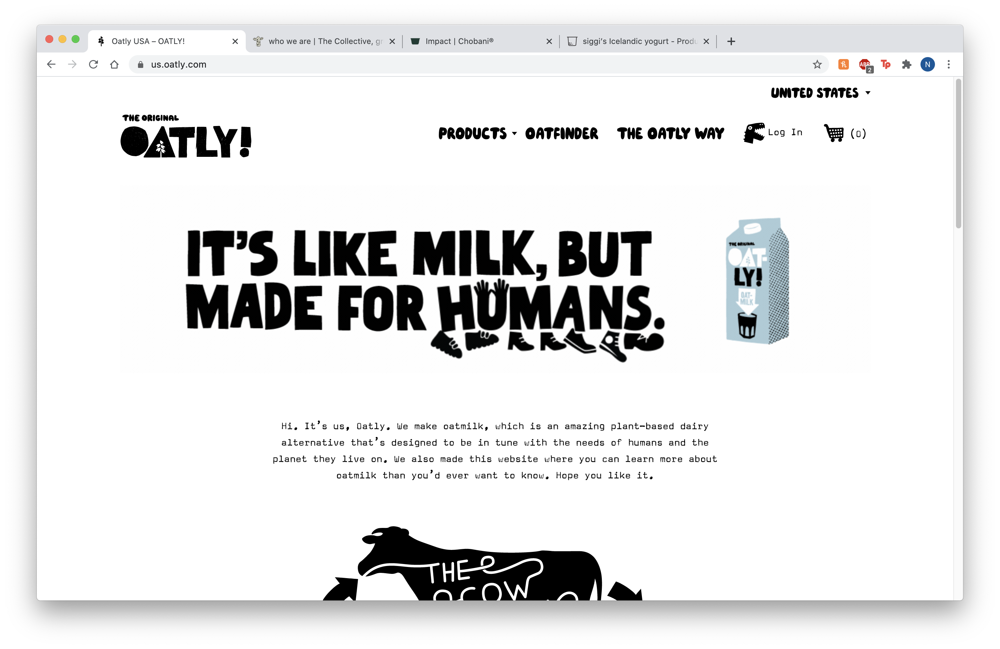
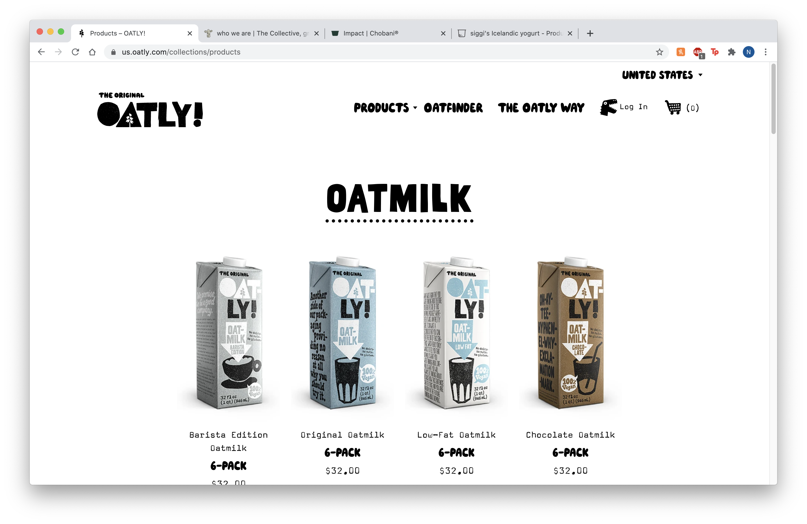
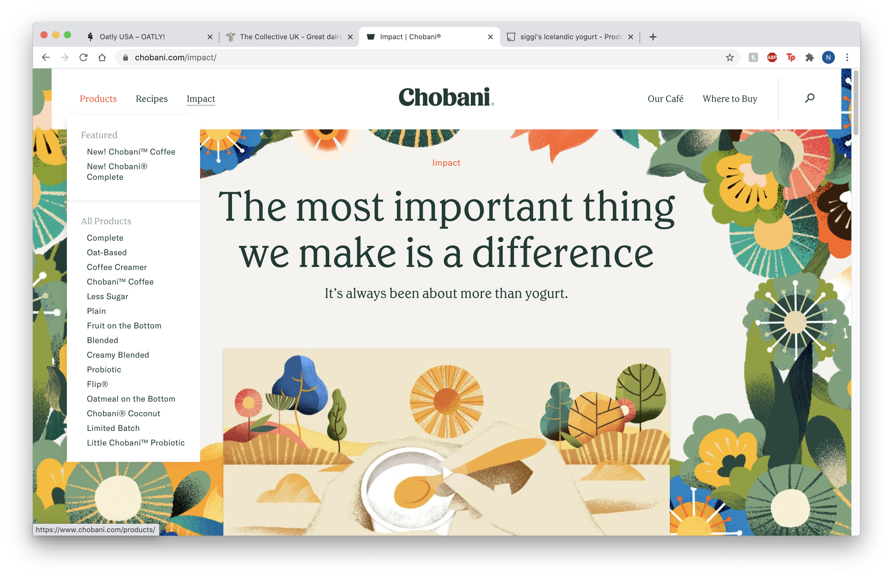
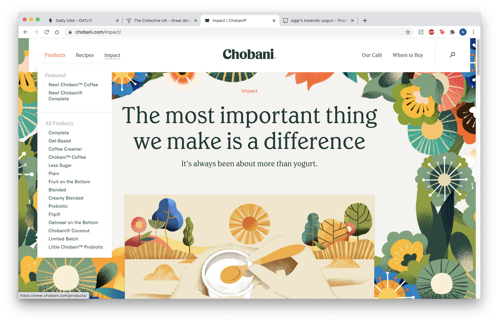
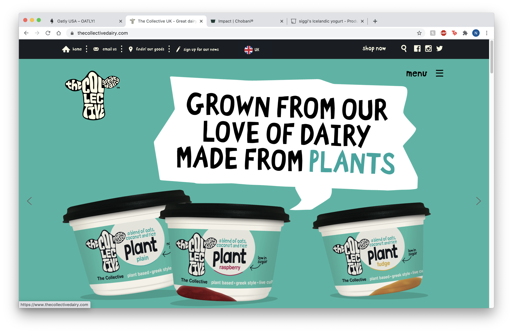
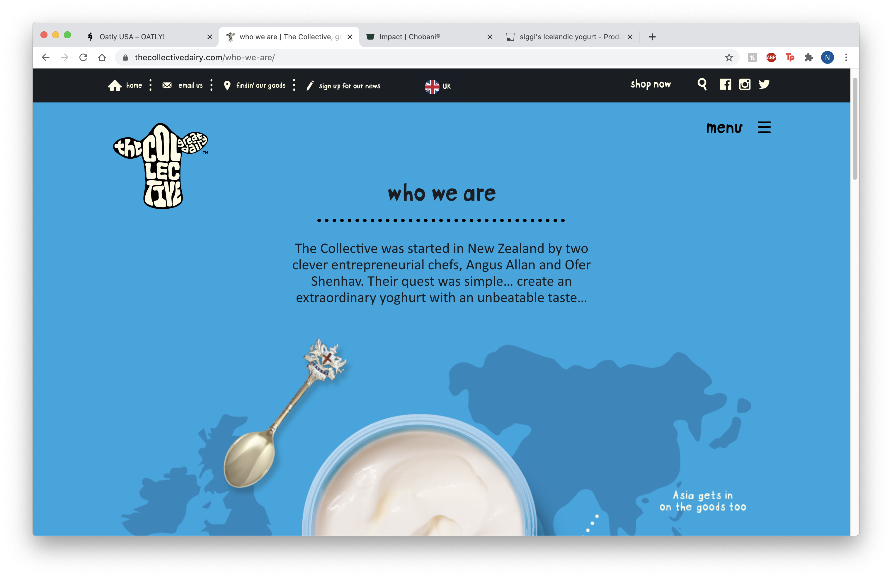

Final project proposal
Introduction
utterly
utterly is a dairy company devoted to making fresh, great-tasting, organic dairy products intended to brighten consumers lives. The company's goal is to create products that have maximum nutritional value and minimal environmental impact. The brand is authentically wholesome, with an emphasis on natural sourcing and organic products.
Target audience
The target audience is a conscious consumer who values authenticity, quality, and sustainability in the products they buy. They are the grocery store shopper who strives to buy products that are nutritious and sustainable, and feel loyalty toward brands with values similar to their own. They appreciated artisinal craftmanship, searching for interesting products to incorporate into their everyday routine.
The primary task and goals of people using this site are consumers who are looking to learn more about the company and products offered, and where they can buy them.
Comparative analysis
Oatly
 Chobani
 

The Collective
 Website content
home
utterly.
wholesome freshness. welcome!
[A graphic banner with utterly branding and the utterly cow.]
products
At utterly we believe in doing things the right way and that begins with delivering our unbeatable taste.
organic milk
[Utterly organic whole milk.]
[Utterly organic 1% milk.]
[Utterly organic fat free milk.]
organic half + half
[Utterly organic half + half.]
coffee creamer
[Utterly vanilla creamer.]
[Utterly sweet cream creamer.]
[Utterly lavendar creamer.]
organic whipping cream
[Utterly organic whipping cream.]
organic ice cream
[Utterly organic churned ice cream.]
where to buy
The utterly map knows which stores carry utterly products, but not if they're currently in stock. We recommend calling your local grocery store to find out if there’s any on shelf before making the trip.
[A map of the United States with pins marking all of the stores and locations that sell utterly products.]
the utterly way
We’re devoted to making fresh, great-tasting, organic dairy products intended to brighten our consumers lives. Our goal is to create products that have maximum nutritional value and minimal environmental impact. Our brand is authentically wholesome, with an emphasis on natural sourcing and organic products. We are utterly. Utterly fresh. Utterly natural. Utterly unique.
[A graphic banner displaying the utterly mission and devotion to sustainability.]
contact
Have some questions for us? Need help with an order? Don't hesitate to contact us! We are happy to help in any way that we can!
email us:
sunshinecoffeeco@gmail.comcall us:
(805)252-7756
write to us:
700 Main St. Cupertino, Ca 95014
[The utterly team smiling in a group photo.]